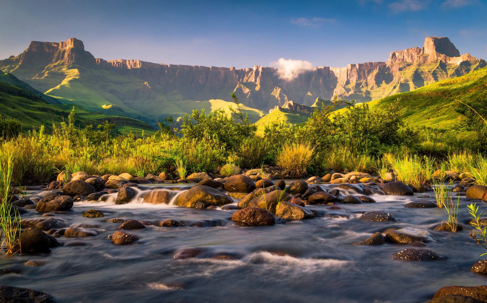

Kwa-Zulu Natal
About this province
KwaZulu-Natal (KZN) is a province in South Africa, known for its diverse landscapes, rich cultural heritage, and economic significance. Its capital is Pietermaritzburg, while its largest city is Durban, a major port and economic hub.

Key Features of Kwa-Zulu Natal:
- Geography: The province has a stunning coastline along the Indian Ocean, lush Midlands, and the Drakensberg Mountains, which are a UNESCO World Heritage Site.
- Culture & History: KZN is home to the Zulu Kingdom, with deep historical roots in Shaka Zulu’s reign. It was also a key battleground during the Anglo-Zulu War and the Boer War.
- Economy: The province thrives on tourism, manufacturing, agriculture, and logistics, with Durban’s port being one of the busiest in Africa.
- Wildlife & Nature: It boasts iSimangaliso Wetland Park and Hluhluwe-iMfolozi Game Reserve, famous for rhino conservation.
- Tourism: Popular attractions include the Golden Mile beaches, Sardine Run, and adventure spots like Oribi Gorge.
Would you like to explore a specific aspect,